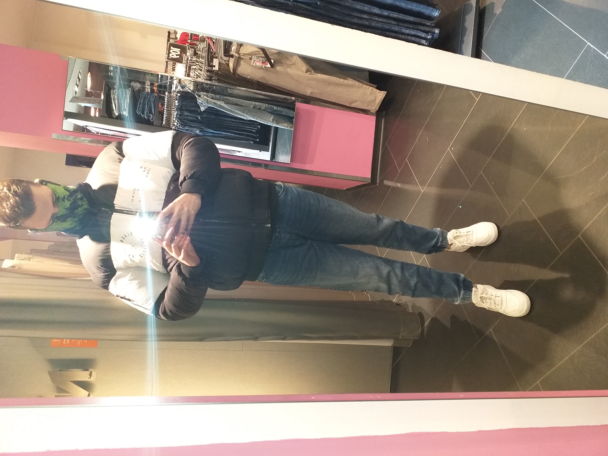

Nazywam się PCH_99, a mianowicie Przemysław Chimiak, absolwent technikum informatycznego, gdzie właśnie tam poznałem technologie webowe, które... jak to by powiedzieć - od razu bardzo polubiłem. Zacząłem się bawić, tworzyć pierwsze pliki html, skrypty JS'a, nie co póżniej poznałem backend - PHP oraz SQL. Niestety jako jedyny z klasy wykazywałem się takim zainteresowaniem.

Postanowiłem pójść dalej, zacząć samemu pogłebiać wiedzę, jeszcze bardziej zafascynował mnie kanał na YOUTUBE Pasja informatyki.
Ten projekt serwisu społecznościowego stworzyłem przede wszystkim dla celów rekrutacyjnych oraz ma służyć jako wielkie podsumowanie mojej dotychczasowej wiedzy, której ciągle pragnę pogłebiać, ulepszać swoje sktypty, być co raz lepszym w tym co robię. Stanowi też jako alternatywa dla moich bliskich i znajomych wobec dzisiejszych gigantów social media.

Fajnie by było gdyby to mój przyszły pracodawca czytał ten opis :), ponieważ bardzo chciałbym znaleść prace w tym, co sprawia mi wielką przyjemność i satysfakcję z dobrze prosperujących witryn internetowych. Dla mnie ,możliwość stworzenia strony internetowej ,przez którą mogą się poznać dwie różne osoby z przeciwległych końców świata jest czymś NIESAMOWITYM! W tak pięknych, zinformatyzowanych czasach żyjemy gdzie niemal wszystko jest na - jedno kliknięcie.